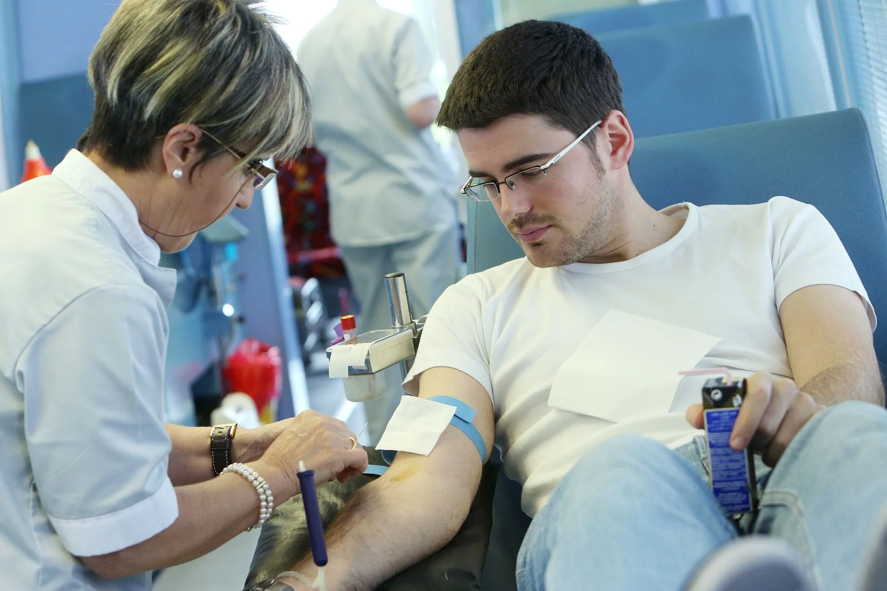
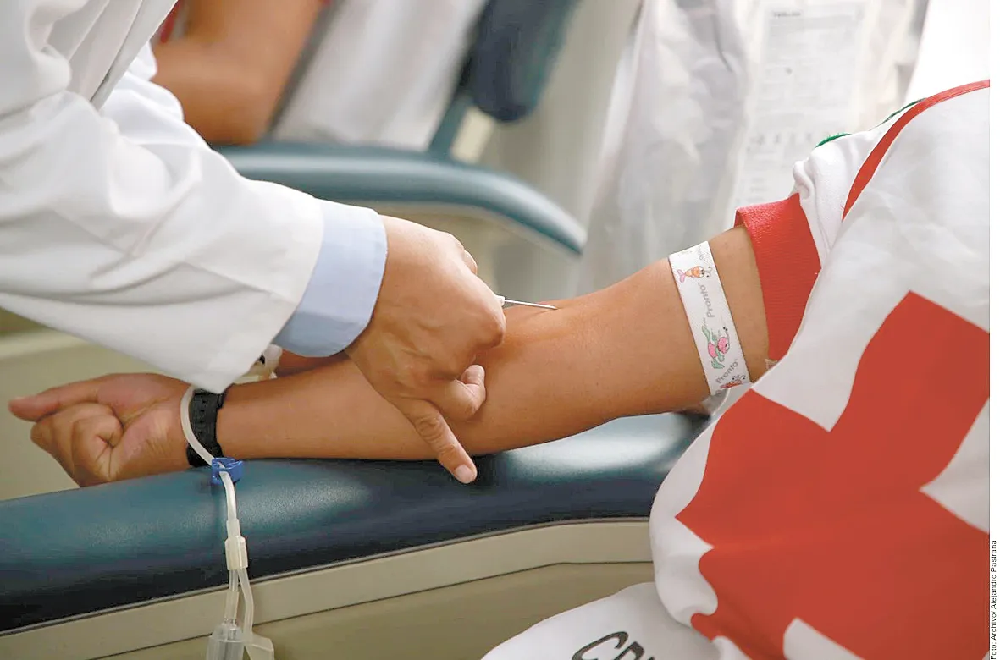
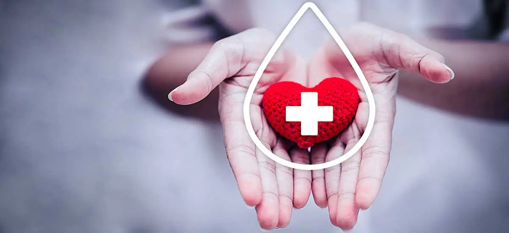

El Centro Regional de Hemoterapia del Garrahan sostiene un modelo de donación 100% voluntaria, y en ese sentido ha sido pionero en el país y la región. Desde el 2011 reemplazó el pedido de donantes de reposición, autoabasteciéndose a través de la organización de colectas externas y aportando componentes de sangre a otros hospitales cuando los requieren. Por año unas 17.000 personas donan sangre y hay 2.400 donantes de plaquetas por aféresis. La entrada es por 15 de Noviembre de 1889 N° 2151, Ciudad Autónoma de Buenos Aires. Para consultas comunicarse a promocion@garrahan.gov.ar o 011-41226007 WhatsApp 1120270742 Días y horarios de atención De lunes a viernes de 7 a 18 hs. y los sábados de 7 a 12 hs. Sacá un turno online para donar De acuerdo a tu disponibilidad y preferencia, podés optar por donar en una de nuestras colectas externas o en nuestro Banco de Sangre. Podés consultar los calendarios y reservar tu turno.
 La donación de sangre es un acto voluntario y altruista. Se necesitan 65 donantes diarios para garantizar la sangre para todos las y los pacientes del Hospital que la necesiten.
Cada semana se transfunden aproximadamente 600 unidades de componentes de la sangre para el tratamiento de niños que padecen enfermedades de mediana y alta complejidad.
La sangre se utiliza para realizar transfusiones a niñxs que necesitan recuperarse de una cirugía, un trasplante, un accidente o para pacientes con leucemias o anemias crónicas severas.
La sangre es una necesidad permanente para el Hospital Garrahan que no se fabrica, no puede comprarse ni venderse y solo se obtiene de personas solidarias que la donen para ayudar a vivir a quienes la necesitan. La donación de sangre es un acto anónimo, voluntario y altruista, y siempre se realiza bajo vigilancia de personal calificado.
Agendá turno para venir a donar a nuestro Banco de Sangre – Centro Regional de Hemoterapia, ubicado en 15 de noviembre de 1889 n°2151, Parque Patricios, Capital Federal Para que la donación sea lo más segura para todos, te pedimos lo siguiente: Leer los requisitos generales para ser donante y los que agregamos en contexto Covid-19. Agendar un turno y validarlo a través del mail que vas a recibir, para que finalmente quede reservado. Contamos con estacionamiento gratuito y exclusivo para donantes. Es muy importante que vengas en el horario que reservaste. Utilizar el tapaboca o barbijo durante todo el proceso de donación. Si no podes venir, avisanos para dejar el turno disponible. Y no te preocupes ¡te esperamos otro día! Si querés donar plaquetas, comunícate con nosotros al logo whatsapp 114992-5507 o escribinos a . Si querés donar sangre en una de nuestras campañas externas o hacernos alguna consulta, escribinos al logo whatsapp 112027-0748 o escribinos a promocion@garrahan.gov.ar. 